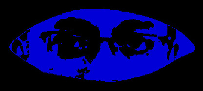

The Philosophy of the Gaze
Anup Dhar

Anup Dhar teaches at the School of Human Studies, Ambedkar University, Delhi
1.1
The Punitive Gaze: Foucault begins Discipline and Punish with the graphic description of the execution of Robert-François Damiens, who attempted to assassinate King Louis XV in 1757. In pre-modern times, the punishment was a public spectacle. As if, the spectators had to be made aware of what would happen to them if they went against the monarch or the monarchical Order of Things. They had to witness. Feel the chill of possible punishment down their spine. So as to not repeat, a similar act of rebellion or resistance. The gaze of the witness – steadfast on the spectacle of violence – had to be translated into long-lasting affect in their inner being.
1.2
The Disciplining Gaze: Foucault moves thereafter to the equally graphic description of a day in the modern prison or the mental health asylum (where madness – madness as distinguished from ‘unreason’, with unreason as the lacking other of Reason – is incarcerated by medicine, by bandages, and not just by iron chains). Hour by hour. The full spread of the schedule that would discipline the ‘criminal’ or the ‘mad’ into the civilizing, and more importantly, the normalizing process. The gaze of the Normal, and the normalizing gaze of the Norm would colonize the inner world.
1.3
Foucault also shows in Discipline and Punish how the criminal is observed by a guard from a watch-tower. The criminal cannot see the guard inside the watch-tower. But the guard can see the criminal. Even if the guard is absent, the imprisoned still reels under the feeling that she is being watched. As if, the gaze of the guard has been internalized. Or introjected. The guard’s gaze is present even in his physical absence. Many a time, we internalize the gaze of the Father, the Priest or the Police. We get interpellated. We feel we are being followed by the scrutinizing gaze of the Other. Of the judgement of the Other. The birth of both shame and guilt could be attributed to the internalized gaze of the Other. Shame is the psychic product of the internalization of the concrete gaze of the Other. Guilt is the psychic product of a more abstract gaze, the gaze of abstract norms, and normalizations; abstract moral codes; strict cultural do-s and don’t-s. The transgression of such moral codes leads to an eating up of one’s own self; with self-beratement, self-flagellation.
1.4
Madness, however, does not get interpellated by the watchman’s gaze. Madness rhymes in infinite nomadicity, ‘in always widening rings of Being’:
Where there is ruin, there is hope for a treasure.
Why do you stay in prison,
When the door is so wide open?
Move outside the tangle of fear-thinking.
Live in silence.
Flow down and down in always widening rings of Being.
2.1
The Voyeur’s Gaze: Lacan offers an interesting turn to the question of the gaze of the voyeur. Is the voyeur peeping through the keyhole? Or is the voyeur constantly worrying about whether he is being seen? Whether he could get caught? The voyeur has a pair of eyes in front. The eyes that are in search of the pleasures of looking. The pleasures of the forbidden. But the voyeur also has an eye at the back of his head. The eye that is anxious. That is constantly anticipating the arrival of someone from behind. The possibility of being seen. In that sense, the voyeur does not see anything. The voyeur only sees whether he is being seen, or getting caught. The third eye of the voyeur – the anxious eye at the back of the head – overwhelms and colonizes the eyes of the voyeur that is looking. ‘Being looked’ takes over the ‘act of looking’. The voyeur, as if, gets consumed by the rearview mirror. He is constantly looking behind. And not ahead. The windscreen view is an absence, an opacity.
3.1
Life also is a creative negotiation between the windscreen view and the rearview mirror. Between what we see in our past, i.e. in our childhood; and where we wish to reach in future. The trace of memories from the past. Past experiences; in the rearview mirror. The road ahead in the windscreen view. The right turn. The left turn. The road blockade.
3.2
Life is a Möbius of both gazes
Behind. Ahead.
Past. Future.
Inner. Outer.
4.1
Mirror of Being: Every morning we look at ourselves in the mirror. The mirror does not lie. We get to see ourselves in the mirror. With some effort, patience and self-probing we could even see parts of our ‘true’ selves. Even if the image in the mirror is laterally inverted. The mirror offers a modest answer to the question: Who am I. How should I live. What are my imperfections.
4.2
Canvas of Becoming: The same mirror becomes our canvas. We paint ourselves. We re-paint ourselves. In the same mirror in which we look at ourselves, we put on an eyeliner. We make ourselves beautiful. We make ourselves presentable to the world. But most importantly we make ourselves beautiful for ourselves. To ourselves. The mirror of being slowly becomes a canvas. Canvas of a new becoming.
5.1
Lover’s Gaze: The summit of selfishness is in the ‘orgasm’. That’s when one is all alone. Too alone. Too self-obsessed. There is no Other at that point. There is no love. Love is before orgasm. Love is after orgasm. Because love requires an Other.
5.2
Love also requires an inner gaze (basīra): close both eyes, to see with the other eye. The inner eye. The inner I … Rumi seems to suggest.
6.1
Close your eyes. Your blind spots will dance. Derrida seems to suggest. Only when we close our eyes do we see labor. Gender. Caste. Race. Ethnicity. Otherwise our gaze remains colonized by the hegemonic. By Capital. By Androcentrism. By Brahminism. By Colonialism. By Orientalism.
6.2
Only when we close our eyes, we begin to hear. Listen. Feel. Smell. Taste. Our other senses knock at our door only when the ocular is muted.
7.1
Only when we close our eyes, we begin to feel.